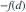

X为非负连续变量，生存函数为S(x)，。当S在d处连续时，h′(d)为？
- A

- B
- C
- D
我已思考，展开答案与解析
正确答案：C
- h(d)=∫ᵈ∞S(x)dx，对下限求导得到−S(d)。免赔额上升会降低期望赔款。
易错提醒先明确分布参数、独立性和统计量的定义，再进行计算。
茆诗松教材知识点拓展 · 教材知识体系：数字特征与条件期望；原创训练，非教材原题
原创专题题
查看参考来源

茆诗松教材知识点拓展 · 教材知识体系：数字特征与条件期望；原创训练，非教材原题
原创专题题
查看参考来源